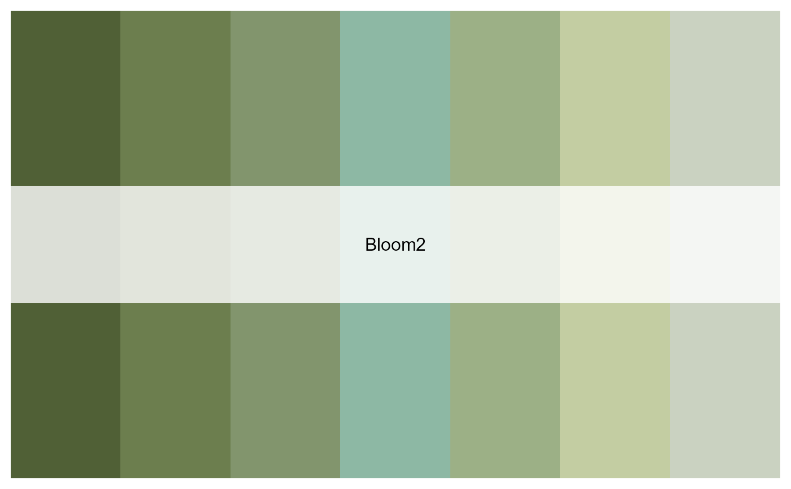

These are a handful of color palettes inspired by lakes, rivers, streams and wetlands. .
limno_palette(name, n, type = c("discrete", "continuous"))
| name | Name of desired palette. Choices are:
|
|---|---|
| n | Number of colors desired. All color schemes are derived from photos provided by contributors to this twitter thread. If omitted, uses all colours. |
| type | Either "continuous" or "discrete". Use continuous if you want to automatically interpolate between colours. @importFrom graphics rgb rect par image text |
A vector of colours.
limno_palette("IowaSummer")limno_palette("Bloom2")limno_palette("PeriFA",10,"continuous")